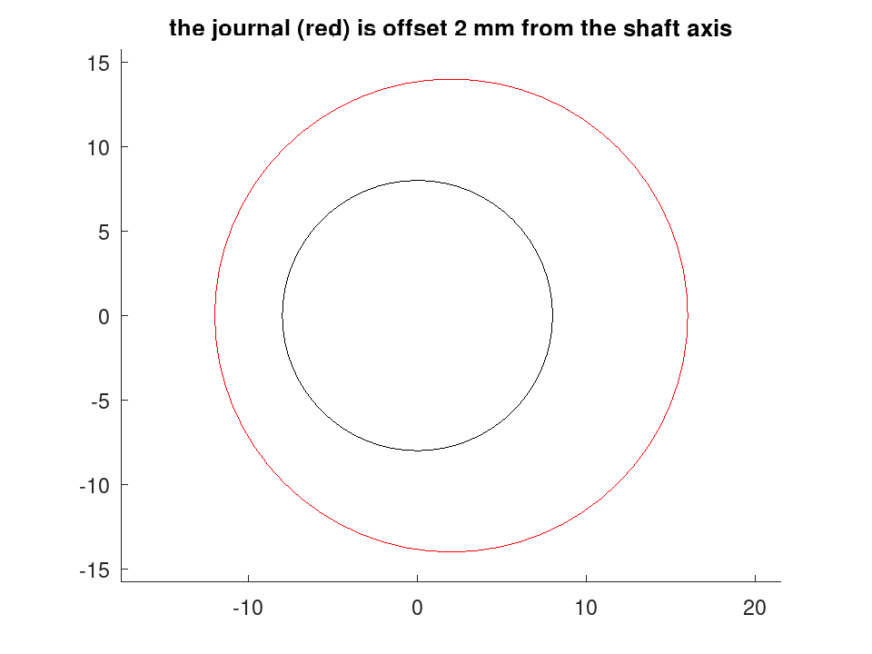

stl.write
drafting: stl.write (FILE, S)
drafting: stl.write (FILE, P, Z)
drafting: N = stl.write (…)
Write a section stack to a binary STL file.
stl.write (FILE, S) writes the solid described by the
struct array S to FILE as a binary STL. Each element of S
is one prismatic section, with fields:
profile | an -by-2 outline, in the units of the model |
z | the two-element range [z0, z1] the
outline is swept through |
holes | optional cell array of outlines to exclude |
Source Code: stl.write
stl.write (FILE, P, Z) is the single-section form,
equivalent to one element with no holes.
N = stl.write (…) returns the number of triangles written.
A single extrusion covers a plate, a disc or a flange, but not a part whose cross-section changes along its axis — a stepped shaft, or one carrying an eccentric journal offset from the centreline. A stack expresses those without leaving the planar model: every section is still a 2-D outline, and only its range and its position change.
The sections need not be concentric, contiguous or the same size. Nothing requires them to touch.
Each section is written as its own closed shell: side walls for the outline and for every hole, and a cap at each end. A single-section solid is therefore a closed manifold, which covers a cycloidal disc, a ring or an output flange.
A stack of several is not one manifold shell. Where two sections abut, both keep their own caps, so the interior face is present twice and the edges do not join. Slicers and mesh-repair tools resolve this by unioning the shells and it prints correctly; a tool demanding a single closed surface will complain. Producing the stepped annular cap that would join them is a harder problem and is not attempted here.
Outlines are normalised before use: the profile is made counter-clockwise and every hole clockwise, so that one rule generates outward normals for both. The caller’s winding is therefore irrelevant. Normals are computed per facet from the vertices rather than stored independently, so they cannot disagree with the geometry they describe.
Caps come from geom.triangulate, which is unconstrained, so a strongly
concave outline may be capped slightly short. Its COVERAGE output
measures that, and dense sampling makes it negligible.
STL stores every coordinate as a 32-bit float, so about seven significant
figures survive whatever the model carried. On a part tens of millimetres
across that is a resolution of a few microns, which is ample for a printed
prototype and is not the format to send a machinist: use
dxf.write for anything dimensionally critical.
See also: geom.triangulate, dxf.write, draw.Drawing
Source Code: stl.write
A profile becomes a printable solid by sweeping it through a z range. Holes are given as a cell array and are cut right through.
a = linspace (0, 2*pi, 65)(1:64)';
b = linspace (0, 2*pi, 33)(1:32)';
outer = 30 * [cos(a), sin(a)];
H = {8 * [cos(b), sin(b)]};
for k = 1:4
c = 19 * [cos(2*pi*(k-1)/4), sin(2*pi*(k-1)/4)];
H{end+1} = c + 4 * [cos(b), sin(b)];
endfor
fn = [tempname(), '.stl'];
n = stl.write (fn, struct ('profile', outer, 'z', [0, 10], 'holes', {H}));
printf ('%d facets, %.1f kB\n', n, stat (fn).size / 1024);
912 facets, 44.6 kB
unlink (fn);
A section stack expresses a part whose cross-section changes along its axis --- here a stepped shaft carrying a journal offset from the centreline, which no single extrusion could describe.
a = linspace (0, 2*pi, 49)(1:48)';
circ = @(r, c) c + r * [cos(a), sin(a)];
S(1) = struct ('profile', circ (8, [0, 0]), 'z', [0, 20], 'holes', {{}});
S(2) = struct ('profile', circ (14, [2, 0]), 'z', [20, 34], 'holes', {{}});
S(3) = struct ('profile', circ (8, [0, 0]), 'z', [34, 55], 'holes', {{}});
fn = [tempname(), '.stl'];
printf ('%d facets in 3 sections\n', stl.write (fn, S));
564 facets in 3 sections
unlink (fn);
The sections seen end-on, which is what the stack describes
D = draw.Drawing ();
D = D.circle ([0, 0], 8);
D.Colour = 'red';
D = D.circle ([2, 0], 14);
plot (D);
title ('the journal (red) is offset 2 mm from the shaft axis');
